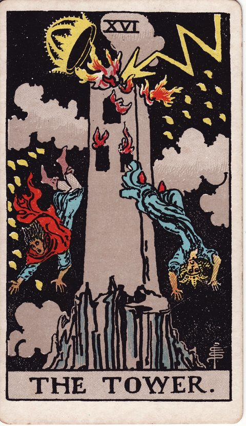

塔の意味
The Tower

- 分類大アルカナ
- 象徴火星／数字16
- 正位置急変・崩壊・気づき
- 逆位置衝撃の回避・先延ばし・くすぶり
築いてきた思い込みの塔が崩れ、真実があらわになる段階です。
描かれている象徴
岩山の上の高い塔に雷が落ち、王冠が吹き飛びます。炎と煙の中、人々が塔から落ちていきます。突然の崩壊や真実の露呈を表しますが、古い枠組みが壊れることで新しい可能性が開かれる場面でもあります。
正位置の意味
- 急変
- 崩壊
- 気づき
前提が突然崩れる予感。土台を見直すよう促されています。
進めやすさ：1 / 5（いったん立ち止まる）
- 見落としていること
- 見て見ぬふりをしてきた土台の亀裂はありませんか。
- 進むときの注意点
- 急な変化には、まず安全と最低限の確保を優先すること。
- 本音（本当はどうしたい？）
- 全部が壊れても残したい、大切なものは何でしょうか。
- 手放してよいこと
- 「この形でなければ」という前提を、握りしめなくてもいいかもしれません。
- 決め手になる違い
- 変化があっても揺らぎにくい土台なのは、どちらですか。
逆位置の意味
- 衝撃の回避
- 先延ばし
- くすぶり
崩壊を避けようとして、問題が内側で膨らんでいる恐れがあります。
進めやすさ：2 / 5（いまは整える・見直すが先）
- 見落としていること
- 小さな違和感を放置して、危機を先送りにしていないか。
- 進むときの注意点
- 見て見ぬふりを続けると、被害が大きくなることも。
- 本音（本当はどうしたい？）
- 崩れる前に、自分の手で変えたいことは何ですか。
- 手放してよいこと
- 「波風を立てたくない」という理由で、現状を守り続けなくてもいいのです。
- 決め手になる違い
- 差がつくのは、先延ばしせず根本から整えられるかどうかです。
決断・迷いにおけるヒント
決断の場面での読み方
塔は、雷に打たれて崩れ落ちる建物を描いた、衝撃の札です。決断の場面では、これまでの前提が根本から覆るような出来事や気づきを示します。積み上げてきた計画が揺らいでいるなら、それは土台に無理があったことを知らせるサインかもしれません。崩れたものを元通りに戻そうとするより、何が本当に必要だったのかを見極め、より確かな基盤から組み直す視点が役立ちます。
よくある迷いとの向き合い方
予想外のトラブルや方針転換に直面し、どう対処するか迷っているときに出やすいカードです。正位置では、今は大きな決断を急がず、まず状況を把握して安全を確保することが先決です。逆位置では、避けられない変化を先延ばしにしているのかもしれません。小さな修正を早めに入れる方が傷は浅く済みます。
決断前に自分に問いかけたいこと
崩れかけているものを、無理に支え続けていないか。予想外の出来事を、土台を見直す機会として受け止められるか。壊れたあとに何を建て直したいか。真実を直視することを避けていないか。
「進めやすさ」は、その選択肢を「いま進める」ときの追い風の強さ。運勢の良し悪しではない。